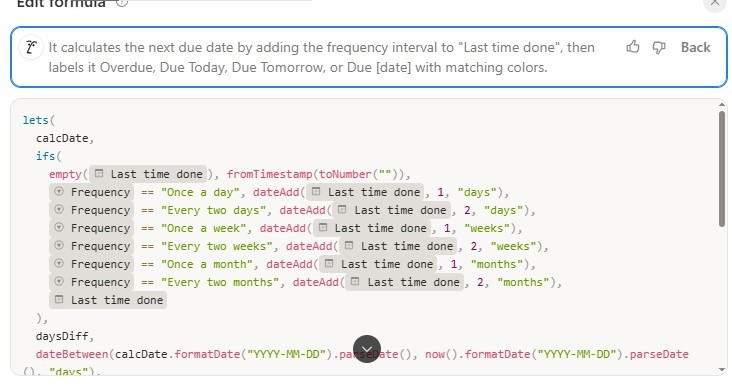
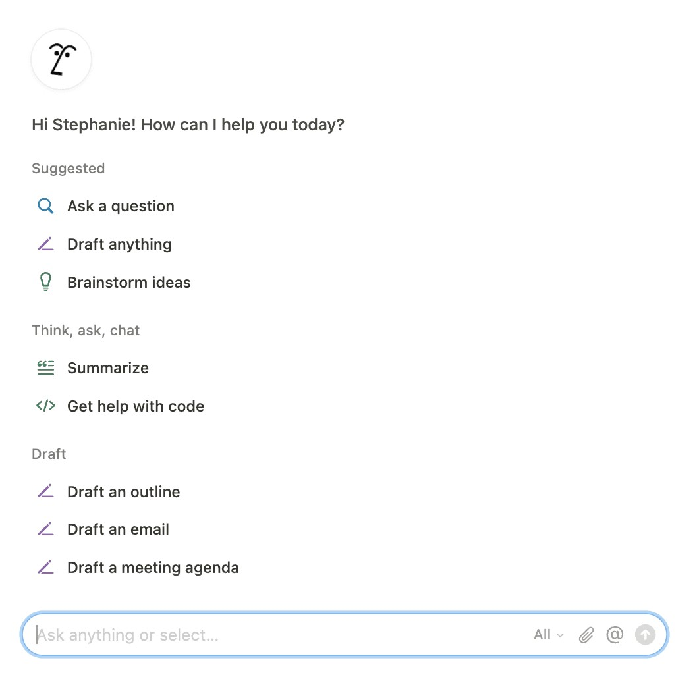

Notion AI – asystent optymalizujący zarządzanie danymi
Notion stanowi wszechstronne środowisko do zarządzania wiedzą oraz tworzenia relacyjnych baz danych. Mimo wysoce intuicyjnego interfejsu, implementacja zaawansowanych funkcji nierzadko stanowi barierę techniczną. W tym miejscu kluczową rolę odgrywa zintegrowany asystent Notion AI. Przekształca on program z biernego notatnika w interaktywną przestrzeń roboczą, pozwalając na wdrażanie skomplikowanych rozwiązań na podstawie poleceń tekstowych, bez konieczności dogłębnej znajomości składni kodu czy ukrytych opcji programu.
Doskonałym przykładem praktycznego zastosowania tego narzędzia była optymalizacja mojej bazy zarządzającej harmonogramem obowiązków domowych. Celem projektu było stworzenie systemu, który automatycznie podświetlałby przeterminowane zadania na czerwono w oparciu o zdefiniowaną częstotliwość ich wykonywania. Samodzielne opracowanie formuły logicznej weryfikującej daty okazało się wysoce skomplikowane. Wystarczyło jednak wywołać asystenta i opisać problem w prompcie, aby sztuczna inteligencja błyskawicznie wygenerowała poprawny kod. Eliminuje to techniczne ograniczenia użytkownika i pozwala na naukę zaawansowanych funkcji w sposób zadaniowy i praktyczny.


Jak wykorzystuję Notion AI do organizacji nauki?
1. Błyskawiczne podsumowania
Przy wklejaniu do Notion prezentacji lub opracowań zadań na kolokwium, mogę wygenerować za pomocą AI praktyczne, zwięzłe podsumowanie na górze strony. Jest to szczególnie użyteczne podczas nauki do egzaminów, gdy baza danych tematów z całego semestru jest bardzo obszerna.
2. Poprawa stylu i gramatyki
Notion AI doskonale sprawdza się w roli osobistego korektora, co zdejmuje ze mnie dużą presję podczas pisania. Mogę swobodnie przelać myśli "na brudno", nie przejmując się literówkami czy chaotyczną składnią. Kiedy skończę, proszę asystenta o wyłapanie błędów, zmianę tonu na bardziej profesjonalny lub przeredagowanie zbyt zawiłych zdań. Pomaga mi to najbardziej, gdy dzielę daną przestrzeń (workspace) z innymi użytkownikami.
3. Wyciąganie zadań do zrobienia
Z długiej, często chaotycznej notatki, Notion AI potrafi wyciągnąć listę konkretnych kroków do podjęcia. Przekształca luźne pomysły w uporządkowaną listę zadań (tzw. to-do list) i układa je w bardzo wygodnej formie z interaktywnymi okienkami do odhaczania. To w znaczący sposób ułatwia przejście od fazy planowania do faktycznego działania, automatycznie porządkując zadania krok po kroku.
4. Podsumowania ze spotkań online
W momencie, w którym program wykrywa rozpoczynające się spotkanie na platformach takich jak MS Teams, Google Meet czy Zoom, automatycznie pojawia się powiadomienie z propozycją przygotowania notatki. Funkcja ta okazała się dla mnie szczególnie przydatna w pracy, podczas cotygodniowych spotkań działu IT. W trakcie całego tygodnia mogłam w dowolnej chwili zajrzeć do wygenerowanych zapisków, mając pewność, że nic ważnego nie pominęłam.
Podsumowanie
Notion AI to dla mnie narzędzie "niewidzialne", ale niezwykle użyteczne. Nie służy konkretnie do prowadzenia dialogu, jak niektóre czatboty. To raczej zintegrowany edytor, który przyspiesza proces twórczy, pomaga przełamać blokadę przed pisaniem i dba o to, by moje notatki były zawsze przejrzyste i zrozumiałe.